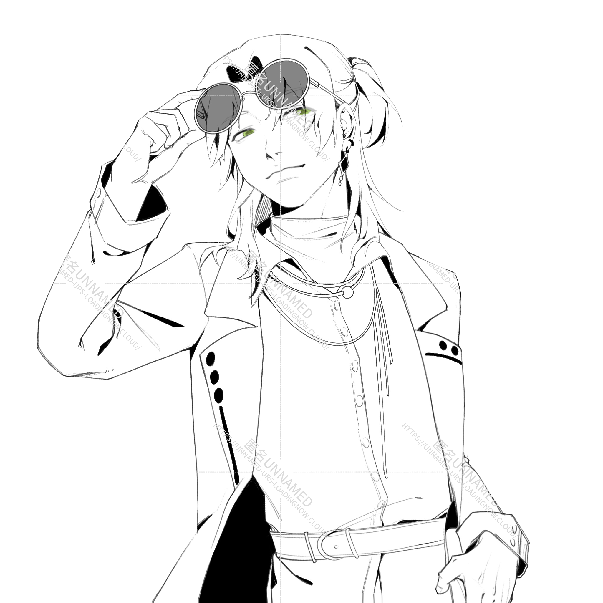

Foenia
E的天降竹马……这个福分给你你要不要？
不是大多数人能接受的正常角色，只是自娱自乐，请不要攻击。
不是好人，应该被打死。
Foenia是自设世界观中的登场人物之一，可以视为是男二一样的角色。
简介
|  |
| 本名：Foenia |
| 别称：小F，炼铜癖 |
| 发色：黄发 |
| 瞳色：绿瞳 |
| 身高：180cm |
| 年龄：32→？ |
萌点：恶心帅，变态，炼铜癖 |
| 生日：10.31天蝎座 |
相关剧情
此段内容有少量NSFW内容
E的直属上司，妇女杂志的编辑
Foenia的家庭是比较破裂的，作为意外而出生的他从小忍受着父母的吵架和冷战。到F12岁时，其父母终于忍无可忍，宣告离婚。被分给父亲的F不得已离开从小住到大的地方。在即将搬走那一天，F因为不想去新环境而找了个角落躲起来偷偷哭泣，正巧被路过的8岁的E所看到。也不知道怎么想的，可能是觉得这哥哥哭的太惨了，E一声不吭地塞给F一张小*熊干脆面的稀有卡然后跑掉了。
被比自己小的陌生孩子关心了，F感到有点暖心，但也没放在心上，转头把卡片塞包里就忘掉了。
搬到新住处后，F不断学习成长。期间也交了几个女朋友甚至男朋友（他是1）但是也没几个月就分手了，对于恋爱以及肉体接触方面他与其说是不在意更不如说是无感。
直到F 22岁即将毕业时，缺心眼子的室友们怂恿他一起看里番，里番的内容是小孩开大车。室友们都在对着大车冲的时候只有他莫名其妙对小孩挺感兴趣。那天晚上F躺在床上一边打手冲一边回忆有什么让自己印象深刻的小孩，翻来覆去好像除了E外没有任何其他的回忆。
而第二天早上拿了一件新外套准备穿的他突然意识到兜里有什么，拿出来一看正好就是那张被揉的皱皱巴巴的小浣熊卡。
至此，F才真正意识到自己的性取向不是男也不是女而是铜。意识到自己古怪⚪癖的F在之后的几年里表面上当着光鲜亮丽的杂志编辑，背地偷偷干见不得人的事情（但是没有对真人下手，在违法的边缘徘徊）
在一次E因生病而未能及时交稿的的情况下，F因为催稿误入E的家里，看到的却是魂牵梦萦的小E。虽然之后被E用”这是我儿子我是鳏夫“的借口敷衍过去了，但是F却念念不忘地盯上了E……
其他设定
- 其实和楼有那么一丁点的血缘关系，是楼的爷爷的另一个儿子的离异对象的孩子。
- F是不知道E能变大变小/匿名是萝卜这两件事的
- 并不是说小孩就唯E不可，但是E是最容易接近的+有最深印象的人。所以在第一次见面之后F就有了一定要得到手的决定。
- 有在想是不是自己有什么执念所以只是单纯对E这个人有兴趣，尝试猥亵（在E睡着）之后发现内心毫无波动，意识到自己就是变态罢了。
E没有睡着，被上下其手了几下之后一晚上都不敢睡，很可怜的宝宝- 楼和F之间没有太多的感情，但是俩人因为那么一丁点的，连俩人都不知道的血缘关系阴差阳错的总会又互动。正所谓替身使者会互相吸引，他俩也总会有一种“看上去很配”，“看上去关系很好”的感觉。
- 在E和楼都提防着F的时候，匿名和F的关系反而很好。一方面是匿名是萝卜，本质上不受人类的道德伦理所约束；另一方面匿名有压倒性的力量，对F的小动作完全不在意。F这边来说，匿是接近小E的手段，亲近楼不可能的情况下只能从匿这边下手。
- 外貌很出众，脱衣显肉的同时脸亦男亦女一般来说帅哥都是弯的
能力
像楼一样，F看似是很普通的局外人，但是实际上是个变态有具体决定的作用，这一属性不可思议地和楼的属性结合在了一起。
要理解所谓具体决定是什么，就得先去了解楼的能力。简单来说，楼只是决定一个大的方向，比如”世界上存在猴子没有屁股“。但是到底具体有多少只？哪里的猴子会比较没有屁股？这些细节性的事情就会由F来决定。
比如像是E，是因为楼的”世界上存在能变大变小的人“的决定，传输到F那边”如果是存在，我觉得那个人会是E呢~“做细节处理，最终落到E这个倒霉蛋身上。
当然，这一切都是基于潜意识进行。楼和F不会去刻意想猴子会不会有屁股，遇到判断阶段，所谓的神之手便会根据其潜意识对世界做出调整。
代餐曲
1.ビターチョコデコレーション
頭空っぽその後に
在脑袋空空之后
残る心が本物なら
残留的是原本的心的话
きっと君だって同じ事
那样你也一定如此
2.LOSER
今勝ち上がるためのお勉強 朗らかな表情
现在为了取胜而努力着 展露无比开朗的表情
踊る阿呆に見る阿呆 我らそれを端から笑う阿呆
跳舞的傻瓜 看着的傻瓜 我们是旁观这种情景笑着的傻瓜
デカイ自意識抱え込んではもう 磨耗 すり減って残る酸っぱい葡萄
紧抱着的巨大自我意识 已被磨耗 像被消磨后残留下的酸涩葡萄
人物关系
下属：Eurs
母亲前任的兄弟的女儿：陈楼顶
朋友的朋友：匿名
CP磕点总结
待补充
其他世界观的TA
村上小说paro
注意：本paro含有魔改村上春树小说人物以及剧情的内容，糅合了很多部并且剧情线极其混乱，请自行避雷
村上小说paro剧情简介：担任计算士职位的Eurs在习得模糊计算后的第二个月离奇死去。但是实际上他并没有死，只是单纯地从大脑的一号线转到了三号线。在三号线世界的他在和无心楼的相处中逐渐明白了自己的心意，最后和影子(小E)一起逃了出去并向一号线楼告白。但是告白完的第二天楼却被其心理扭曲哥哥Foenia绑走，在匿名的帮助下E最终救出了楼并且击打F至住院。被救出的楼选择自己亲手杀死F然后自首。
dbq我知道真的非常混乱。
不得不说，F这个角色和《奇鸟行状录》里的绵谷升有密切的关系。不如说是因为看了《奇鸟行状录》之后F这人就突然跳出来了一样。
可以说是同时融合了《鸟》里的绵谷升和《世》里面的博士的角色。聪慧而偏激。
黄油社paro
注意：本paro有些许NSFW内容
因为经费不足，学校面临废校危机！此时此刻的校长因为想让最后一届学生有个美好的青春回忆【并且拿社团吸引新生加入】下令所有人至少加入一个社团。
“我知道了！大家都喜欢黄色那么我们就建立一个有意思的黄色社团来吸引新生吧！”这么说着的匿名靠着自己的第六感拉了几名学生强行凑齐了一个社团……其名为黄油社。
18岁高三保送生学长，在初中时候和楼在同一学校。因为在入学时候曾和匿有过交集于是被匿名找了上来。本来准备找个借口婉拒的F看到穿着校服装学生的E之后立马改口说非常乐意加入，当晚梦遗之后才发现自己喜欢的原来是装嫩的废物男人。
F一直有些体虚病弱，经常跑医务室休息，在入社之前就已经和E有所接触。但是俩人只是医生和病人的关系，私下也没怎么交流过。而当见识过穿校服的E之后，F会经常装病去医务室死皮赖脸呆着。
在这条线里的F和楼没有直接的关系，包括血缘关系。但是走在一起经常容易被认为是兄妹or情侣。俩人的学习成绩都很不错，所以老师睁一只眼闭一只眼，对这种情况不管不问。
相关图片
特别鸣谢及注释
注：以上图片全为站长本人约稿，有些图片因为约稿时间过长已经忘记画师是谁。如需我标注或者不准使用，请在下留言或私聊我。